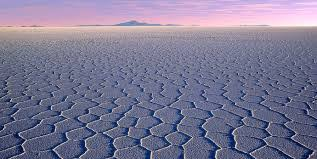
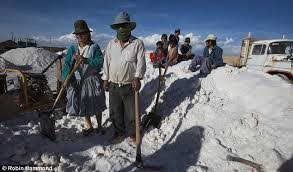
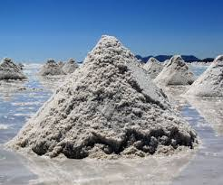

Fame commerciale intendo... quante apparecchiature ci sono oggi nel mondo alimentate con una batteria al litio? Possiamo dire infinite?
Ecco che questo simpaticissimo metallo alcalino, situato appena appena sul terzo gradino della scala periodica, è diventato essenziale per la tecnologia moderna, assai di più di quand'era quasi relegato a far da combustibile per le stupide bombe all'idrogeno della guerra fredda.
Ma da dove deriva questo leggerissimo metallo (galleggia anche sulla benzina) famoso in tutti i trattati elementari di chimica per il caratteristico e bellissimo colore "rosso cardinale" che impartisce alla fiamma?
Una volta lo si ricavava principalmente dallo spudomene, un silicato di litio e alluminio presente in vari paesi fra cui l'Australia, che ancora lo produce da questa fonte grazie alle pegmatiti della grande miniera di Greenbushes.
Le varietà trasparenti kunzite e hiddenite dello spudomene sono usate come belle gemme di vari colori.
Attualmente la maggior parte del litio (99,5%) non si ricava più dallo spudomene (o altri minerali di minore importanza) ma dalle saline!
Sì, proprio enormi saline, ma saline specialissime, assai lontane dal mare.
Hai presente il famoso deserto di Atacama, in Cile, la zona più arida della Terra? Nemmeno i microbi riescono a viverci ad Atacama...
Lì in zona, diciamo così, si trova il Salar (bacino di acque salate) de Atacama, e da lì è arrivato, con buonissima probabilità, il litio che si trova nelle batterie del tuo e del mio cellulare.
Questo bacino contiene il più ricco deposito del mondo di litio "in salamoia"! Andiamo a vedere.
Il Salar de Atacama si trova all'interno di un'area tettonica di drenaggio idrico senza sbocchi al mare che ha avuto origine nel tardo Cenozoico e che è stato luogo di vulcanismo intenso dal Miocene.
Si trova a 2300 metri di quota ed è riempito di sedimenti evaporitici estendentisi per circa 3000 chilometri quadrati (come tutta la Valle d'Aosta!).
La pioggia annuale è in media di soli 10/20 mm ed il clima è caratterizzato da forti e costanti venti con un'umidità relativa bassissima; il cielo è praticamente sempre senza nubi, con fortissimo irraggiamento solare.
Queste condizioni climatiche estreme determinano un alto tasso di evaporazione (10 litri per metro quadrato al giorno!) che favorisce la concentrazione delle salamoie ricche di elementi alcalini per evaporazione solare.
Le salamoie del Salar derivano da acque geotermiche associate al vulcanismo, da lisciviazione dei sali solubili in acqua delle rocce vulcaniche, da lisciviazione di argille ricche di litio e da acque saline di laghi nelle alte Ande attraverso zone di faglia permeabili del Pliocene e Quaternario.
L'accumulo a lungo termine e l'evaporazione delle acque drenate in questo bacino in condizioni desertiche ha dato luogo a grandi quantità di materiali salini.

Ecco un'idea della composizione ionica di queste salamoie in grammi/litro:
- sodio 93
- potassio 22
- magnesio 12
- litio 2
- cloruri 190
- solfati 23
- acido borico 4,4
dove si vede che la quantità di litio (un elemento non certo comune) è eccezionalmente elevata; salta anche all'occhio l'assenza quasi totale del calcio (appena 0,03 g/l).
Gli elementi sono presenti in gran maggioranza sotto forma di cloruri (halite, carnallite, kainite, sylvite, eccetera, in varia associazione con il cloruro LiCl e il solfato di litio Li2SO4).


La separazione dei vari componenti è laboriosa ed avviene per lo più per cristallizzazione frazionata; la separazione del boro si effettua con solventi organici.
Alla fine di un lungo ciclo si ha precipitazione del litio sotto forma di carbonato Li2CO3, il sale di litio di gran lunga più importante e la cui produzione annuale è di molte migliaia di tonnellate.
Il carbonato viene poi esportato per la produzione del litio metallico che finirà nelle batterie dei computers e cellulari di tutto il mondo.
Altri enormi giacimenti di litio in acque salate si trovano in Argentina (Jujuy) e in Nevada (Silver Peak), tutti siti gestiti da potenti multinazionali americane, che fanno il prezzo mondiale dell'elemento numero TRE nella lotta per aggiudicarsi un pezzo del monopolio di un elemento che sta diventando strategico.